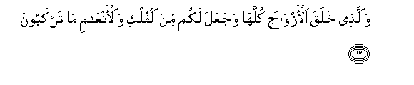
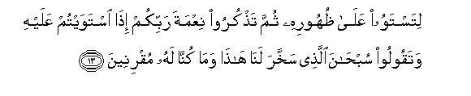

Sacred Texts Islam Index
Hypertext Qur'an Unicode Palmer Pickthall Yusuf Ali English Rodwell
Sūra XLIII.: Zu<u>kh</u>ruf, or Gold Adornments. Index
Previous Next

The Holy Quran, tr. by Yusuf Ali, [1934], at sacred-texts.com
Sūra XLIII.: Zukhruf, or Gold Adornments.
Section 1

1. Ha-Mīm
2. By the Book that
Makes things clear,—
3. Inna jaAAalnahu qur-anan AAarabiyyan laAAallakum taAAqiloona
3. We have made it
A Qur-ān in: Arabic,
That ye may be able
To understand (and learn wisdom).
4. Wa-innahu fee ommi alkitabi ladayna laAAaliyyun hakeemun
4. And verily, it is
In the Mother of the Book,
In Our Presence, high
(In dignity), full of wisdom.
5. Afanadribu AAankumu alththikra safhan an kuntum qawman musrifeena
5. Shall We then
Take away the Message
From you and repel (you),
For that ye are a people
Transgressing beyond bounds?
6. Wakam arsalna min nabiyyin fee al-awwaleena
6. But how many were
The prophets We sent
Amongst the peoples of old?
7. Wama ya/teehim min nabiyyin illa kanoo bihi yastahzi-oona
7. And never came there
A prophet to them
But they mocked him.
8. Faahlakna ashadda minhum batshan wamada mathalu al-awwaleena
8. So We destroyed (them)—
Stronger in power than these;—
And (thus) has passed on
The Parable of the peoples
Of old.
9. Wala-in saaltahum man khalaqa alssamawati waal-arda layaqoolunna khalaqahunna alAAazeezu alAAaleemu
9. If thou wert
To question them, "Who created
The heavens and the earth?''
They would be sure to reply,
"They were created by (Him),
The Exalted in Power,
Full of Knowledge";—
10. Allathee jaAAala lakumu al-arda mahdan wajaAAala lakum feeha subulan laAAallakum tahtadoona
10. (Yea, the same that)
Has made for you
The earth (like a carpet)
Spread out, and has made
For you roads (and channels)
Therein, in order that ye
May find guidance (on the way);
11. Waallathee nazzala mina alssama-i maan biqadarin faansharna bihi baldatan maytan kathalika tukhrajoona
11. That sends down
(From time to time)
Rain from the sky
In due measure;—
And We raise to life
Therewith a land that is
Dead; even so will ye
Be raised (from the dead);—

12. Waallathee khalaqa al-azwaja kullaha wajaAAala lakum mina alfulki waal-anAAami ma tarkaboona
12. That has created pairs
In all things, and has made
For you ships and cattle
On which ye ride,

13. Litastawoo AAala thuhoorihi thumma tathkuroo niAAmata rabbikum itha istawaytum AAalayhi wataqooloo subhana allathee sakhkhara lana hatha wama kunna lahu muqrineena
13. In order that ye may
Sit firm and square
On their backs, and when
So seated, ye may
Celebrate the (kind) favour
Of your Lord, and say,
"Glory to Him Who
Has subjected these
To our (use), for we
Could never have accomplished
This (by ourselves),
14. Wa-inna ila rabbina lamunqaliboona
14. "And to our Lord, surely,
Must we turn back!"
15. WajaAAaloo lahu min AAibadihi juz-an inna al-insana lakafoorun mubeenun
15. Yet they attribute
To some of His servants
A share with Him
(In His godhead)!
Truly is man a blasphemous
Ingrate avowed!